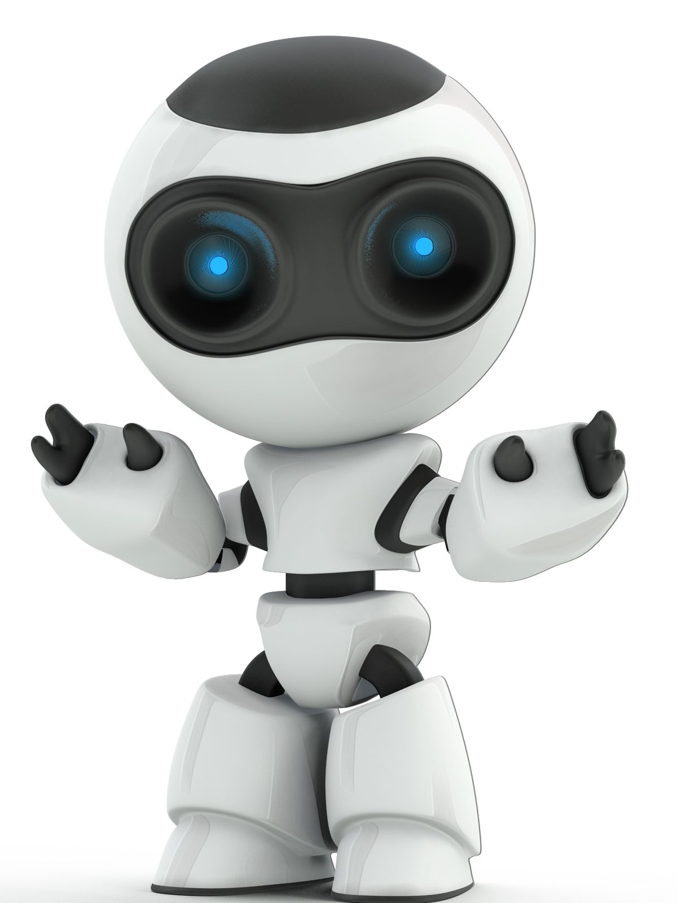

About ME

Machine Learning Engineer
With a background in robotics and a Master's in Robotics Engineering from WPI (with a minor in Deep Learning), I bring something most ML engineers don't: I understand the physical systems my models are deployed into.
My work sits at the intersection of Production ML, Computer Vision, and LLMOps — and I care deeply about what happens after the model is trained: deployment, observability, and making sure it doesn't break in the wild. I've built systems for real-time inference, large-scale defect detection, and retrieval-augmented pipelines that hold up under production load.
I've worked across manufacturing, robotics, and autonomous systems — which means I know what it takes to move a model from notebook to production and keep it there. I'm drawn to problems where the stakes are real, the constraints are hard, and production is the standard — not the exception.
Education
Worcester Polytechnic Institute Worcester, USA
Master of Science in Robotics Engineering · Minor in Deep Learning 2022 – 2024
GPA: 4.0 / 4.0
Manipal Institute of Technology Manipal, India
Bachelor of Technology in Mechatronics Engineering 2016 – 2020
CGPA: 8.68 / 10
Contact
Let's connect!
Highlights
A few projects I'm proud of — visit the Projects page for the full story.